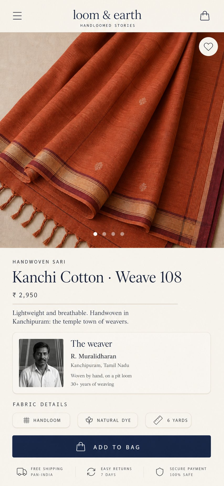

Quantum Looms
A handloom marketplace that gives the weaver a name, not just a product photo. Andhra weavers lose the story of a saree the moment it reaches a reseller, so the product page leads with the person and the loom — then the price, the drape, the dye.
my challenge:
Make a hand-woven saree feel as buyable online as it does in the shop.
12weaver profiles sketched
4checkout steps, down from 7
1week of Figma